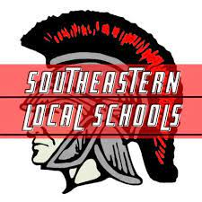

Implemented an automated way to reboot PCs and start application on startup using VB configuration
files, Windows Batch, and Windows Task Scheduler
Created Nintex Workflows that were used on our SharePoint site. These workflows automated things like
requesting replacement PCs from IT and adding new elements the Controls issues list.
Created a test server and database for managing content displayed on monitors that support digital
signage over the network.
Created an interactive Visio diagram that shows how all of the devices and systems in a specific
department interact with each other.
Utilized the company's Tortoise repository to push my files. This promoted version control and also acts
as a location where others can reference my past work.
Eliminated inconsistencies for columns in SQL tables using many different functions to clean up Strings.
This significantly trimmed the amount of unique values within different fields.
Attended a 2-day Power BI training session. I learned how to manipulate datatables using the software
and how to create interactive visuals that display data capable of using many different filters.
Created a SharePoint Project to document my internship. This project linked to the Controls SharePoint
site and was a great way for me to manage tasks and store files relevant to what I was working on.

IT Assistant
Southeasern Local Schools
June 2019 - August 2021
Updated all PCs to Windows 10 throughout the school district.
Inventoried all Chromebooks throughout the school district.
This involved creating spreadsheet that documented the model, serial number, MAC address, and status of
every device.
Troubleshooting and repairing devices such as PCs, Chromebooks, and projectors. This involved cleaning
vents, screen replacement, battery replacement, keyboard key replacement, and updating software.
Made custom ethernet cables.
Learned how to use a crimper, so I could cut cables to specific lengths. Learned the order in which the
cables go into the heads.
Also included using a tester to make sure all cables worked.
Replaced patch cables on local servers.
Many of the old cables were longer than they should be. This created a waste of cable.
Used custom length patch cables that I had created to reduce clutter in server room.
Used Windows Task Manager to monitor the status of the CPU, GPU, and memory of different devices.